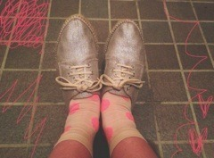

| 2013/04 15 Mon | 406回目*marika |
昨日地震がありました。
関東は地震がなかったけれど、
みなさん大丈夫でしたか？
.........
個別握手会in名古屋
たくさんの方が握手しに来てくれて
嬉しかったです。
個人pvで好きになった！
という方がたくさん嬉しい。
見てくれてありがとう。
まりっか'17中毒者続出

しろくまりっくまに伝えます。
あと、乃木ここやBBJの感想も
ありがとうございました。
MCもっと磨きます...
名古屋の名物教えてくれて
ありがとうございました。
あんかけパスタってなに？
めっちゃ気になる...
食べたいよーお腹空いたよー
楽しい時間を
ありがとうございました。
4部 ゆる巻き

カーディガン I am I
ボタンの部分が1から5までの数字

鮮やかな青色。いろんな色欲しいー
見えにくいけど、
作ったネックレス付けておる。
5部 蝶のピンに小さいお団子

シャツワンピ AS KNOW AS pinky
これよく見たら水玉模様なの

もーかわいすぎて一目惚れしたのよ。
形もきれいだし、
やっぱしこの丈がすきです。

靴 gaimo
新しい靴。これの白も買って、
シルバーをもう一足買って
お母さんが黒に染めている。
だから3足。大人買いすげえ！
履きやすいから
夏にヘビロテしそうです

ここでお話を

ずっと目を付けてた
服があったんだけど、
この前買い物に行った時
お店がなくて結局買わなかったの。
でね、その日から何日か経って
ある日家に帰ったら...
なんとその服がかけてあったのです！
お母さんがかわいいと思って
買ったらしい。びっくりした。
親子だなー遺伝だなーって思った。
その服今度着よーっと

久しぶりに会った！
ゆきなかわいい

ぴとってくっついてくるところ
相変わらずかわいいー

まりか
コメント(335)
2013/04/15 00:48